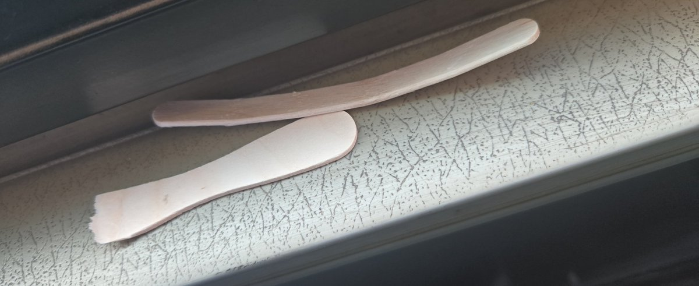

penpunk
@penpunx
@BakaHDT 多了一个而)

BakaHDT
@BakaHDT
*和主人在公交上，我俩刚刚吃了雪糕，在玩雪糕棍
主人：(突然)再硬的东西，用力掰也能把它掰弯(用力把雪糕棍掰弯)
我：木直中绳，輮以为轮，其曲中规，虽有槁暴，而不复挺者，輮使之然也
主人：啊?(开着窗风比较大所以根本没听清)
主人：叽里咕噜说什么呢，听不懂，我要操你
我：...? https://t.co/62tqSMPNq3